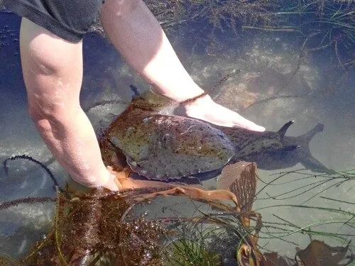

软体动物 · 动物界
海兔 Aplysia californica

没有外壳的海洋腹足类，头顶有两对触角像兔耳，受惊时会喷出紫色墨汁，是神经生物学研究的经典模式动物。
- 分类
- 门软体动物门纲腹足纲目海兔目科海兔科属海兔属
- 栖息环境
- 北美太平洋沿岸的浅海岩礁、潮间带和海藻床
- 地理分布
- 北美太平洋沿岸，从美国加州到墨西哥西北部
- 保护级别
- 暂无评估
物种志
海兔的身体柔软，呈卵圆形，没有外壳。头部有两对触角，后面一对像兔子的耳朵，因此得名“海兔”。体色红褐、紫褐或绿色，常与栖息的海藻颜色相近，起到伪装作用。成体体长一般 20–40 cm，最大可超过 70 cm，是体型较大的海蛞蝓类。
海兔分布于北美太平洋沿岸，从美国加州到墨西哥西北部，栖息于海藻繁茂的浅海岩礁和潮间带。它以海藻为食，食物中的色素会进入它的身体，因此体色常随食物变化。受惊时，海兔会喷出紫红色的墨汁，墨汁的颜色同样来自海藻色素，用来迷惑捕食者。它是雌雄同体动物，繁殖时常成串交配，把卵带黏附在岩石上。海兔是神经生物学的经典模式动物：它的神经系统简单、神经元大而清晰，科学家用它研究学习和记忆的细胞机制，相关研究曾获得诺贝尔奖。目前它没有IUCN 的正式评估，中国未将其列入国家重点保护野生动物名录。
形态与习性
- 食性以海藻为食，体色常随食物颜色变化
- 体长一般 20–40 cm，最大可超过 70 cm
- 防御受惊时喷出紫红色墨汁，颜色来自海藻色素
- 繁殖雌雄同体，常成串交配，卵带黏附在岩石上
- 科研价值神经生物学经典模式动物，用于研究学习和记忆
- 栖息环境海藻繁茂的浅海岩礁和潮间带
趣味知识
- 海兔头顶的触角像兔耳，其实它是没有外壳的腹足类动物。
- 受惊时它会喷出紫红色的墨汁，颜色来自它吃的海藻。
- 加州海兔是神经科学研究的明星，科学家用它揭示学习和记忆的细胞机制。